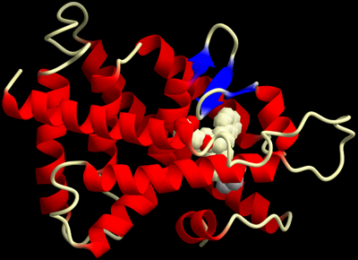
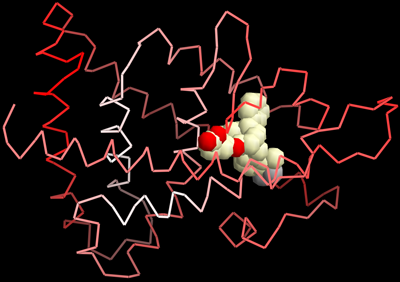
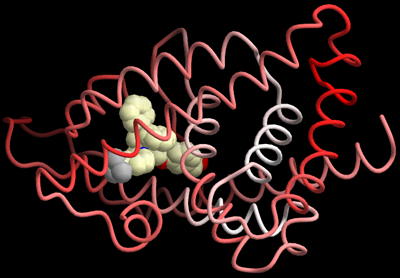

QScriptFileIO
QScriptでファイル入出力を行なう¶
QScriptを使用するとPerlライクな 簡単なテキストファイルの入出力が行なえます． このページではこの機能を分子構造の表示に応用したケースを紹介します．
DSSPで計算した二次構造を読み込む¶
現時点でCueMol自体には二次構造を計算する機能がありません． ですので， 二次構造情報が入っていないPDBファイルで リボンモデルを表示する場合， DSSP等で計算した二次構造情報を読込んでやる必要があります．
Documents/QScriptのチュートリアル/Step3ではprocheckの出力から 手動で設定する例を紹介しましたが， ここではDSSPの出力ファイルを自動的に解析して割り当てる例を紹介します．
ファイル¶
以下のファイルをダウンロードし，同じディレクトリに置いてください． そして，CueMolを起動してメニュー「File」→「Execute QScript...」から fileio1.qsを開いてください．
- PDBファイル:
- DSSP出力ファイル:
- QScriptファイル:



DSSPファイル¶
DSSPの出力ファイルは，はじめの24行はヘッダーで，25行目から残基ごとの情報になります．
# RESIDUE AA STRUCTURE BP1 BP2 ACC N-H-->O O-->H-N N-H-->O O-->H-N TCO KAPPA ALPHA PHI PSI X-CA Y-CA Z-CA
1 1 L 0 0 105 0, 0.0 2,-0.2 0, 0.0 178,-0.0 0.000 360.0 360.0 360.0 148.0 1.9 27.4 55.8
2 2 T > - 0 0 75 1,-0.1 4,-2.4 177,-0.0 5,-0.3 -0.500 360.0-113.9 -86.9 164.2 0.6 27.5 52.2
3 3 A H > S+ 0 0 69 1,-0.2 4,-2.2 2,-0.2 5,-0.2 0.923 118.8 49.9 -62.4 -41.6 -2.4 25.5 51.3
4 4 N H > S+ 0 0 89 1,-0.2 4,-2.7 2,-0.2 -1,-0.2 0.934 109.7 50.4 -63.2 -45.3 -0.2 23.3 49.1
5 5 Q H > S+ 0 0 23 1,-0.2 4,-2.2 2,-0.2 -1,-0.2 0.892 111.2 45.7 -67.0 -39.8 2.3 22.7 51.8
以上は24行目から抜粋したものです． RESIDUEの部分（６〜１０文字目）に残基番号，STRUCTUREの部分（２５文字目）に二次構造の情報が入っています． これらを取り出して処理すればよいわけです．
スクリプトの解説¶
# スクリプトがあるディレクトリーのパス名を取得
$pwd = sys.getScriptPath();
<!!!!!!>
# PDBファイルを開き，
# "ecr"という名前の分子オブジェクトを作成
# 分子オブジェクトを$molに代入する．
$mol = readPDB("$pwd/ECR_MODEL.pdb","ecr");
<!!!!!!>
# ローカル変数は以下の{}(スコープ)内のみで有効
{
# ローカル変数の宣言．
local $line;
# テキストファイルdssp.txtを開いて入力ストリームを作成．
# そして$finに代入している．
local $fin = fistream("$pwd/dssp.txt");
# 最初の24行はスキップ．（ログとして表示）
foreach $i (1..24) {
$line = $fin.readline();
$line.chomp();
sys.println($line);
}
<!!!!!!>
# 25行目から行末までは，残基ごとの情報が入っている．
# 各行を読み込み処理．
while ($fin.ready()) {
# 入力ストリーム$finから一行読込む
$line = $fin.readline();
<!!!!!!>
# 行の6文字目から5文字は残基番号
# substrは0始まりで文字の位置を数える（Perlと同じ）
# integer()で文字列から整数に変換している
$resid = integer($line.substr(5, 5));
<!!!!!!>
# 行の17文字目から1文字は二次構造→$codeに格納
$code = $line.substr(16, 1);
<!!!!!!>
# $codeがHの場合はhelix, Eの場合はsheet,
# それ以外はcoilに変換
if ($code == "H") {
$code = "helix";
}
else if ($code == "E") {
$code = "sheet";
}
else {
$code = "coil";
}
<!!!!!!>
# 現在の残基（$resid）を選択
$mol.selectResid("_", $resid, $resid);
# 現在の残基のsecondaryプロパティーを設定
$mol.setProp("secondary", $code);
}
}
# 以上のスコープから出るとローカル変数$finは破棄される
# →ファイルはクローズされる．
<!!!!!!>
$mol.select(se/resn BLK/);
... (省略) ...
$r_p.setProp("sheet_tail.gamma", 4.0);
<!!!!!!>
# 残基プロパティーsecondaryがhelixの部分を選択
$mol.select(se/rprop secondary=helix/);
# 赤色に着色
molvis.paint($r_p, color(1,0,0));
# 残基プロパティーsecondaryがsheetの部分を選択
$mol.select(se/rprop secondary=sheet/);
# 青色に着色
molvis.paint($r_p, color(0,0,1));
<!!!!!!>
... (以下省略) ...
Verify3Dのスコアで着色¶
実は，上記で使用しているECR_MODEL.pdbは， ヒトのグルココルチコイドレセプターから 昆虫のエクジソンレセプターを比較モデリングした モデル構造です． 例えばモデル構造の評価にVerify3Dを使用した場合， そのスコアによって残基を着色すれば モデルの良し悪しが分かりやすくなります．
ファイル¶
以下のファイルをダウンロードし，同じディレクトリに置いてください． そして，CueMolを起動してメニュー「File」→「Execute QScript...」から
- PDBファイル:
-
Verify3Dのスコア：
これは，Verify3DのウェブサイトにECR_MODEL.pdbをサブミットすると出てくる結果ページの，「Display the raw average data」ボタンをクリックすると出てくるページからコピペしたものです． -
QScriptファイル:



スクリプトの解説¶
主なポイント
- 複雑なフォーマットのテキストファイルを解析するには，正規表現を使えば簡単に実現できます．（このケースではsubstrでも出来ますが，例として正規表現を使っています．）QScriptではPerlとほぼ同じ正規表現が使用できます．
- テキストから読み込んだ数値を原子に割り当てるには，温度因子あるいはoccupancyに代入しておく．
- simple, traceレンダラーの場合はこの例のように簡単に温度因子(or occupancy)でグラジエント着色できる．
- tubeやribbonレンダラーの場合は次のセクションで説明．
$pwd = sys.getScriptPath();
$mol = readPDB("$pwd/ECR_MODEL.pdb","ecr");
<!!!!!!>
# スコアの最大値と最小値
$smin=1.0e10;
$smax=-1.0e10;
{
local $line;
# 正規表現オブジェクトを作成 →$reに代入
# 何回も使用する場合は，このようにループ等の外で
# 予め正規表現オブジェクトを作っておいた方が高速．
local $re = re/avg\s+\w\s+(\d+)\s+([\d\.]+)/;
# 入力ストリームを開く →$finに代入
local $fin = fistream("$pwd/verify3d.txt");
# read verify3d score
while ($fin.ready()) {
$line = $fin.readline();
# 正規表現に入力行$lineがマッチしなかった場合は
# エラーを出して継続
if (!$re.match($line)) {
sys.println("Invalid line: $line");
continue;
}
# グルーピングを使用してマッチした部分を取り出す
# at(1)で，1番目の括弧中にマッチした部分
# (Perlで言うところの$1)を取り出せる
$resid = integer($re.at(1));
# at(2)で，2番目の括弧中にマッチした部分
# (Perlで言うところの$2)を取り出せる
$score = real($re.at(2));
<!!!!!!>
# 最大値と最小値の更新
if ($score<=$smin) $smin = $score;
if ($score>=$smax) $smax = $score;
<!!!!!!>
# 現在の残基を選択
$mol.selectResid("_", $resid, $resid);
# 選択された残基の温度因子を$scoreに書き換える
$mol.forEachAtom() ($atom) {
$atom.setBfac($score);
};
}
# sys.printfで最大最小スコアを表示．
# printfはC言語のものと大体同じ仕様だが，
# QScriptでは関数に可変引数を渡せないので，
# このようにリストにして渡してやる必要がある．
sys.printf("max score: %f, min score: %f\n", [$smax, $smin]);
}
... (途中省略) ...
$mol.select(se/resi 1:239/);
$r_p = $mol.createRend("p", "trace");
$r_p.setProp("linew", 5.0);
# 温度因子による着色モード
$r_p.setProp("coloring.colormode", 1);
# 低いほうは$sminが赤色, 高いほうは$smaxが白色になるように着色
# Verify3Dのスコアは高いほうが良いので，
# 良い構造の部分が白に，悪い構造の部分が赤になる．
$r_p.setProp("coloring.lowpar", $smin);
$r_p.setProp("coloring.highpar", $smax);
$r_p.setProp("coloring.lowcol", color(1.0, 0.0, 0.0));
$r_p.setProp("coloring.highcol", color(1.0, 1.0, 1.0));
... (以下省略) ...
Tube, ribbon rendererの場合¶
tubeやribbonレンダラーの場合は「スクリプトによる着色」を使用して着色する必要があります． この場合は別に温度因子やoccupancyに値を代入しなくてもよく， 独自の配列（実際には連想配列；QScriptではdict型）を作ってそれを参照して着色するスクリプトを設定します．
なぜ配列に単純なリストlist型を使わずに連想配列dict型を使うかというと， list型はリンクトリストで実装されているためで， インデックスでアクセスするとO(N)の時間がかかり遅いからです． 連想配列は木構造で実装されているため， インデックスでアクセスしてもO(logN)の時間でアクセスできます． ただし，そのためには数値を文字列に変換する必要があります．
以下がスクリプトファイルになります．PDBやverify3d.txtは上記と同じものを使用してください．

